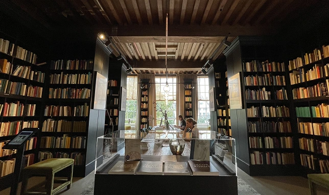

Vier 450 jaar Amsterdam in het huis met de hoofden
Meer lezenWoen. tot zat. 10:00-17:00h
Zon. 11:00-18:00h
123, Keizersgracht
NL 1015 CJ Amsterdam
Tentoonstellingen
Bekijk alle tentoonstellingenGewetensvrijheid!
Denken, geloven en onderzoeken in Europa, 1500 - 1800
28 april t/m 7 september 2025
Over het Museum
Ga op ontdekkingsreis door 2.000 jaar verzamelde wijsheid, geïnspireerd door de afbeeldingen en teksten uit de collectie van de Bibliotheca Philosophica Hermetica.
